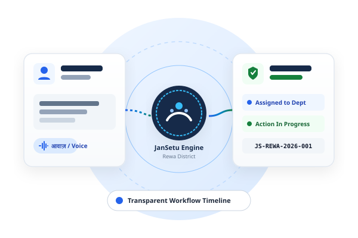

आपकी आवाज़। आपका आवेदन। समाधान का पारदर्शी मार्ग।
अपनी सार्वजनिक समस्या को सरल हिंदी या अंग्रेजी में बताएं। जनसेतु AI रीवा जिले में नागरिक शिकायतों को सुव्यवस्थित, ट्रैक करने योग्य डिजिटल कार्यप्रणाली में बदलने का प्रोटोटाइप प्रस्तुत करता है।

नागरिक त्वरित सेवाएं
रीवा जिले के नागरिकों के लिए आसान व पारदर्शी डिजिटल विकल्प
शिकायत दर्ज करें
सरल हिंदी में अपनी समस्या बताएं, श्रेणी व स्थान का चयन करें।
शिकायत ट्रैक करें
अधिकारी की टिप्पणी, विभाग की कार्यवाही व प्रगति लाइव देखें।
सरकारी सेवाएं
आय प्रमाण पत्र, नल संयोजन व लोक सेवा केंद्र की मार्गदर्शन जानकारी।
AI सहायक से पूछें
सिम्युलेटेड सहायक समस्या पहचानकर सही कदम सुझाता है।
जनसेतु AI कैसे काम करता है?
नागरिक की समस्या से समाधान तक: डिजिटल, समझदारीपूर्ण और पारदर्शी।
समस्या बताएं
टाइप करके या बोलकर अपनी परेशानी सरल शब्दों में बताएं।
श्रेणी सत्यापन
स्मार्ट प्रणाली संबंधित विभाग सुझाती है, जिसे आप बदल भी सकते हैं।
डेमो शिकायत दर्ज
आपको एक विशिष्ट ट्रैकिंग नंबर (ID) प्राप्त होता है।
अधिकारी समीक्षा
विभागीय अधिकारी शिकायत देखकर टीम नियुक्त करते हैं और टिप्पणी दर्ज करते हैं।
पारदर्शी ट्रैकिंग
नागरिक समाधान होने तक हर कदम को स्पष्ट रूप से देख सकते हैं।
डेमो पोर्टल अनुभव चुनें
नागरिक, अधिकारी और जिला प्रशासन के अलग-अलग दृष्टिकोण का परीक्षण करें।
नागरिक पोर्टल
ग्रामीण एवं शहरी नागरिकों के लिए सरल, हिंदी-प्रथम इंटरफ़ेस। बोलकर या लिखकर शिकायत दर्ज करें, सरकारी योजनाओं की जानकारी लें और ट्रैकिंग आईडी प्राप्त करें।
अधिकारी पोर्टल
विभागीय अधिकारियों के लिए कार्यप्रणाली डेस्क। शिकायतों की समीक्षा करें, विभाग आवंटित करें, स्थिति बदलें और फील्ड रिपोर्ट टिप्पणी दर्ज करें।
जिला प्रशासन
रीवा कलेक्टर एवं विभागाध्यक्षों के लिए व्यापक डैशबोर्ड। सांकेतिक भौगोलिक हॉटस्पॉट मानचित्र, श्रेणी विश्लेषण एवं समय-सीमा (SLA) अनुपालन मेट्रिक्स।